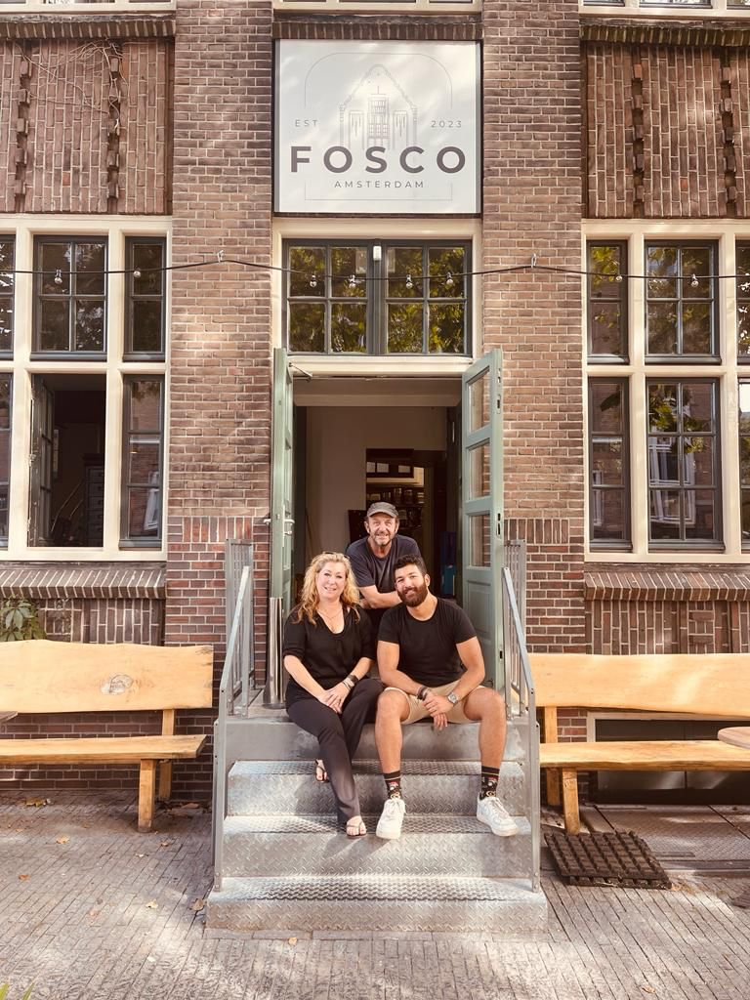
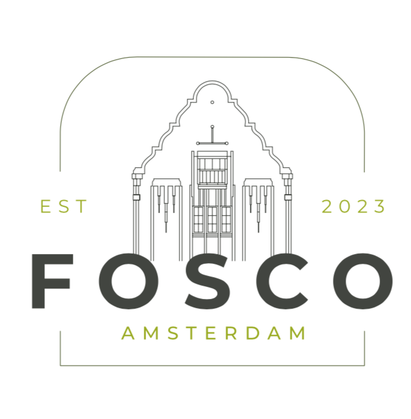

Est2023
Fosco
Amsterdam
Eetcafé in het historische Ontsmettingsgebouw aan het Rietlandpark. Voor koffie met een krantje, een borrel met bitterballen of diner.
Elke dag open vanaf 16:00
Iedereen is hier van harte welkom
Welkom bij Fosco Amsterdam. Iedereen is hier van harte welkom om te genieten van een ongedwongen sfeer, heerlijke koffie, krantje, lunch, borrel/cocktail, bitterbal of diner.
Met live muziek, kunst-exposities, bedrijfsborrels, quizzen, een kleurplaat voor de kleintjes en uiteraard belangrijke live uitzendingen via ons grootscherm, wil Fosco weer voor wat reuring zorgen in het Oostelijk Havengebied. Ons hele team heeft er heel veel zin in, tot snel!
- Live muziek
- Kunst-exposities
- Bedrijfsborrels
- Quizzen
- Kleurplaat voor de kleintjes
- Live uitzendingen op het grootscherm


Menu
Van een bakje nootjes bij de borrel tot een rib-eye aan tafel. VG vegan, V vegetarisch. Prijzen in euro's.
Snacks
- Gemengde nootjes4,5Van Gotjé
- Bitterballen6Mosterd
- Vegan bitterballen VG7Mosterd
- Fried karaage chicken8Chipotle mayo
- Mini loempia's VG6Chilisaus
- Mini frikadelletjes6Mayonaise
- Mini kaassoufflés V7Chilisaus
- Portie frites V6Mayonaise
Gyoza 6 stuks
- Groente gyoza VG9Dumplingsaus, lente ui & sesamzaad
- Kip gyoza9Dumplingsaus, lente ui & sesamzaad
- Eend gyoza10Dumplingsaus, lente ui & sesamzaad
Nachos
- Nachos vega V9Cheddar, jalapeños, pico de gallo, crème fraîche & guacamole. Optie spicy chicken +2
Ciabattina
- Hummus rode biet VG6Za'atar & olijfolie
- Makreelrillettes8Limoen & lente ui
- Gamba's pil pil12Knoflook en chilipeper
Zoet slagroom +0,5 · bol vanille-ijs +2
- Appeltaart van Oma Reus6
- Passievrucht cheesecake6
- Javaanse spekkoek4
- Dame blanche8Suikerpinda's & Fosco siroop

Fosco Classics
18:00 tot 22:00
- Surinaamse roti kip23Geserveerd met een plaat, zuur, ei & madame jeanette piccalilly
- Smashburger19Dubbele smash patty op brioche met cheddar, sla, augurk, tomaat, ui & burgersaus. Geserveerd met frites. Optie bacon +1
- Half kippetje23Seizoensgroenten, rozeval aardappelen & chipotle mayo
- Rib-eye steak 200 gr27Seizoensgroente, chimichurri & frites
- Portugese visstoof24Gamba's, witvis, paprika & aardappel in een kruidige tomatenbouillon. Geserveerd met ciabatta
- Buddha bowl VG21Parelcouscous, medjoul dadels, groente pickles, geroosterde seizoensgroente, rode kool, rode bieten hummus & chimichurri
- Vega burger VG optie19Brioche, sla, augurk, tomaat, ui & burgersaus. Geserveerd met frites
- Chef's specialVraag de bediening!
Koffie
- Lungo | Americano3,4 | 3,4
- Espresso | Doppio3,4 | 4,2
- Cappuccino3,5
- Flat white4,4
- Cortado3,5
- Latte macchiato3,5
- Espresso macchiato3,5
- Chai latte3,8
- Extra shot+1
Thee & meer
- Kopje thee | potje thee3,4 | 5,5Earl Grey, groene, kruidenthee, rooibos, groene jasmijn, Ceylon, verse munt of gember
- Fosco chocolademelk3,5Wordt ook warm gedronken! Slagroom +0,5
- Irish coffee9,5
- Italian coffee9,5
- French coffee9,5
- Spanish coffee9,5
Likeuren & distillaten
- Saluti Limoncello4,5
- Zuidam Amaretto4,5
- Cointreau5
- Grand Marnier5
- Licor 434,5
- Baileys4,5
- Ricard Pastis5
- Isolabella Sambuca4,5
- Juttertje kruidenbitter4
- Salmari4
- Ararat Brandy 5yr5,5
- Ararat Brandy 10yr6,5
- Calvados VSOP4,5
- Cazadores Tequila Blanco5
- Koch Mezcal6
- Lokaliteit Wodka4
- Pravda Vodka5
- Lokaliteit Sammy Rum4
- The Kraken Spiced Rum5
- Appleton Estate 8yr Rum6
- Four Roses Bourbon5
- Jameson Whiskey5
- Tenjaku Blended Whisky6
- Speyburn 10yr7
- Laphroaig 10yr8
- Ketel 1 Jonge Jenever4
- Zuidam Oude Genever5
- Zuidam Korenwijn5
- Grappa5
- Pisco5
Per glas | per fles. Organic biologisch.
Wit
- El Paso Verdejo VG4,7 | 22,5Spanje · fris & fruitig
- Monte Real Rioja Blanco VG6,6 | 32Spanje · krachtig & uniek
- Vinuva Pinot Grigio VG Organic6 | 29Italië · fruitig & soepel
- LRS Picpoul de Pinet6,4 | 31Frankrijk · mineralen & fris
- Pierre-Henri Chardonnay6,2 | 30Frankrijk · klassiek & rond
Rood
- El Paso Tempranillo VG4,7 | 22,5Spanje · fruitig & soepel
- Monte Real Rioja VG7 | 34Spanje · krachtig & vol
- Villarini Nero d'Avola Organic6,2 | 30Italië · kruidig & soepel
- Rifugio Primitivo6,8 | 33Italië · kruidig & rond
- Pour Le Vin Pinot Noir6,4 | 31Frankrijk · fruitig & licht, gekoeld
Bubbels
- Pupitre Cava Brut VG Organic6 | 29Spanje · droog & citrus
- Grande Réserve Champagne70Bernard Remy · levendig & fris (per fles)
Rosé
- Romi&Lola Pinot Grigio Rosé5 | 24Italië · fruitig & fris
- La Garrigue Rosé6 | 29Frankrijk · soepel & rond
Wijn van de maand Vraag de bediening!
Van de tap
- Birra Peroni 5%3,2 · 3,5 · 6,8 · 190,2 l · 0,25 l · 0,5 l · 1,5 l. Italiaans pils op zijn best
- Erdinger Weizen 5,3%5,4 · 8,40,3 l · 0,5 l. Vol fruitige klassiek Duitse weizen
- Fosco Witbier 5%5,4Fris & fruitig witbier van Fosco
- Two Chefs Funky Falcon Pale Ale 5,2%5,4Fris met wat citrus en een licht bittertje
- Grimbergen Blond 6%5,8Volle romige blond met een zoetje
- Chimay Tripel 8%6Klassieke tripel uit België
- Fosco wisseltapVraag het de bediening!
Fles & blik
- Grolsch Beugel 5%5,5De iconische 0,45 l beugel
- Corona Extra 5%5Met een partje limoen
- Magners Apple Cider 4,5%5Droge & frisse appelcider
- Magners Pear Cider 4,5%5Droge & frisse perencider
- Mort Subite Kriek 4,5%5Zoet kersenbier met een zuurtje
- Orval 6,2%6,2Belgische trappisten ale
- Westmalle Dubbel 7%6Volle & gebalanceerde dubbel
- La Chouffe 8%6,2Kabouterbier
- Duvel 8,5%6,2Klassiek Belgisch zwaar blond
- Karmeliet Tripel 8,4%6,2Fruitig & kruidig
Speciaal
- Brewdog Session IPA 4,2%5,8Fris, citrus & hoppig
- Brewdog Elvis Juice 5,1%6,2Grapefruit infused IPA
- Two Chefs NEIPA 5%6,2Tonen van passievrucht
- Two Chefs Sour 4,8%6Sunset Suzy orange soda sour
- v/d Streek Hop Art IPA 5%6,2Glutenvrij met alle smaak
No & low
- Erdinger Alkoholfrei 0,5%5,4Duitse weizen
- Funky Falcon AF 0,2%5,8Pale ale met citroengras
- Leffe Blond 0,0%5,6Klassieke Belgische blond
- Jever Fun Pils 0,3%3,5Duits pilsener
Nu te zien bij Fosco
Houtsneden van Ammetje Schook
Op deze expositie is een veertiental houtsneden te zien. Het is een serie met portretten van vier kunstschilders, drie filosofen en een componist. Tevens een serie van vier met daarop afgebeeld muziekinstrumenten en twee houtsneden waar de afbeelding je uitnodigt om iets te drinken of te eten.
Sinds een aantal jaren woon en werk ik op de Oostelijke eilanden en zodoende vind ik het leuk om de bezoekers van eetcafé Fosco kennis te laten maken met mijn werk.
Ammetje Schook

Het Ontsmettingsgebouw
Fosco is gevestigd in het historische Ontsmettingsgebouw, waar voorheen al café's gevestigd waren als De Cantine en later Bombarie.
De naam Fosco is een knipoog naar de zanger Bob Fosko (zanger van de Raggende Manne) die het gebouw kraakte en daar jaren met zijn gezin gewoond heeft. Ook verwijst het naar het chocoladedrankje dat tot de jaren 80 veel gedronken werd. De cacao lag opgeslagen aan de Oostelijke Handelskade.
Het Ontsmettingsgebouw is een opmerkelijk historisch pand tussen moderne architectuur. Het behoort tot het monumentale Lloyd-complex aan de Oostelijke Handelskade en heeft de sloopgolf van de twintigste eeuw overleefd, mede dankzij buurtbewoners en krakers.
Het Ontsmettingsgebouw heeft een roerige geschiedenis gehad: landverhuizers gingen vanaf hier naar Zuid-Amerika nadat ze gecontroleerd waren op luizen en ziektes, zodat de overtocht kon beginnen. Nu is het een broedplaats voor kunstenaars, beheerd door Stichting Kunstwerk Loods 6, met als eigenaar Stadsherstel.
Langskomen
Rietlandpark 373-3751019 EM Amsterdam
020 363 84 30
info@fosco.amsterdam
Vragen, of een bedrijfsborrel bespreken? Bel of mail ons gerust.
Openingstijden
| Maandag | 16:00 – 00:00 |
|---|---|
| Dinsdag | 16:00 – 00:00 |
| Woensdag | 16:00 – 00:00 |
| Donderdag | 16:00 – 00:00 |
| Vrijdag | 16:00 – 01:00 |
| Zaterdag | 16:00 – 01:00 |
| Zondag | 16:00 – 00:00 |
Fosco Classics serveren we van 18:00 tot 22:00.
Nieuws & events
Volg ons op Instagram om op de hoogte te blijven van de laatste events.